What exists
Before proposing anything new: every picture the 2018 book has, the newsroom's figures in the articles the second edition draws on, and the storyboard panels that already work as infographics.
The 2018 book: 31 images
Looked at one by one. Most are screenshots of 2018 tools; the few real infographics are someone else's (a Radical Candor quadrant, sixteen personality types, the Big Five, Wikipedia's licence table), and three figures the text links were never generated. The recommendation is for the working copy and the next candidate; v1/ is frozen and does not change. 2 keep, 6 redraw, 3 replace, 13 drop, 7 kept as the 2018 record.
| Image | Kind, where | What it is, whose | Do | Why |
|---|---|---|---|---|
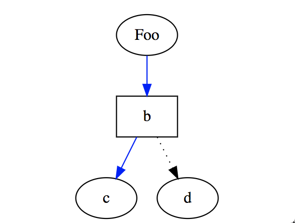 | diagram 2.mvp-for-gen-z-dev/content/dot-language.md | A Graphviz drawing: Foo points to b, b to c and, dotted, to d. the author's rendering | keep ch. 31 | Small, clean and the author's own; a DOT example still teaches graphs in four lines. Chapter 31 (your first graph, built by hand) is where it would go, redrawn at print size if kept. |
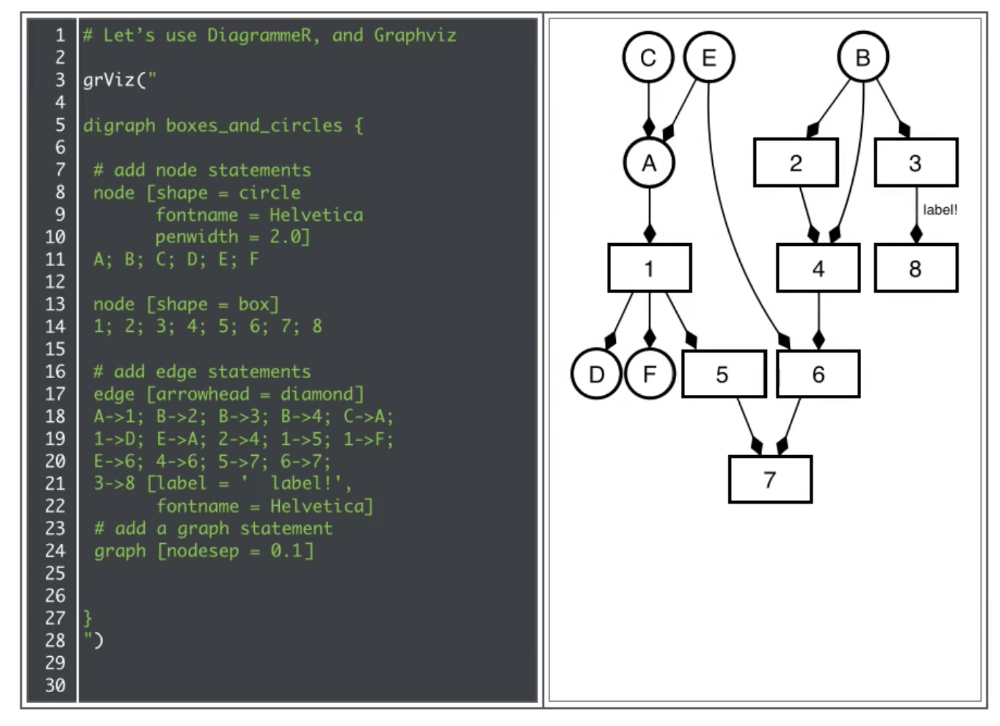 | screenshot 2.mvp-for-gen-z-dev/content/dot-language.md | Graphviz source on the left (boxes and circles, edges, a label) and the graph it renders on the right. the author's screenshot | keep ch. 31 | Code beside its picture is the whole lesson of chapter 31; worth keeping or redrawing at print size. |
| never generated | missing 1.introduction/stem-tech-stack.md | Gen X's tech stack, linked and never generated from PlantUML. the author's | redraw · drawn | Drawn by code from the 2018 lists: stem-tech-stack. |
| never generated | missing 1.introduction/stem-tech-stack.md | Gen Y's tech stack, linked and never generated. the author's | redraw · drawn | Drawn by code: stem-tech-stack. |
| never generated | missing 1.introduction/stem-tech-stack.md | Gen Z's tech stack, linked and never generated. the author's | redraw · drawn | Drawn by code: stem-tech-stack. |
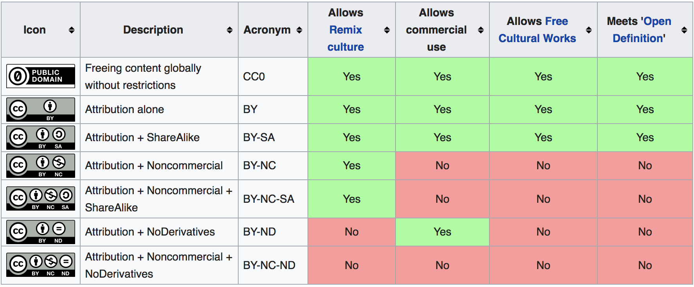 | table 2.mvp-for-gen-z-dev/content/creative-commons.md | Wikipedia's table of the Creative Commons licences (CC0, BY, BY-SA, BY-NC, BY-NC-SA, BY-ND, BY-NC-ND) against remix, commercial use, free cultural works and the open definition. Wikipedia (CC BY-SA) | redraw ch. 26 | Licences matter more in 2026, when everything an agent writes needs one; the facts can be drawn again by code as a small table with this book's palette, and the redraw credits Wikipedia. The book itself is CC BY 4.0 (decision 001): say so on the same page. |
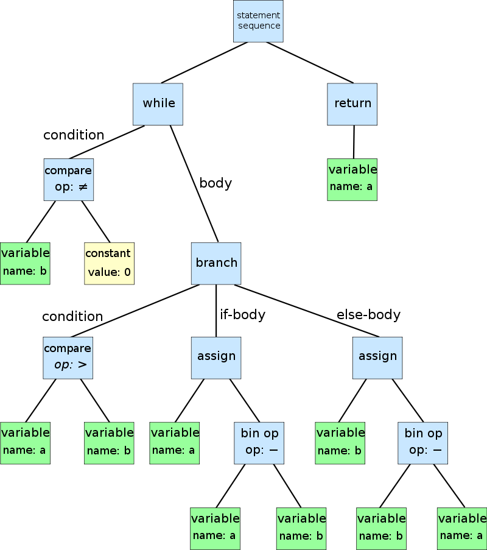 | diagram 3.technologies/content/AST.md | The abstract syntax tree of Euclid's algorithm: statement sequence, while, compare, branch, assign, variables and constants. Wikimedia Commons (licence to check) | redraw ch. 3 · drawn | The 2026 point, code is already a graph, is chapter 3's (code-is-a-layered-graph); a tree drawn by code from a three-line example of the book's own is clearer than a borrowed one. |
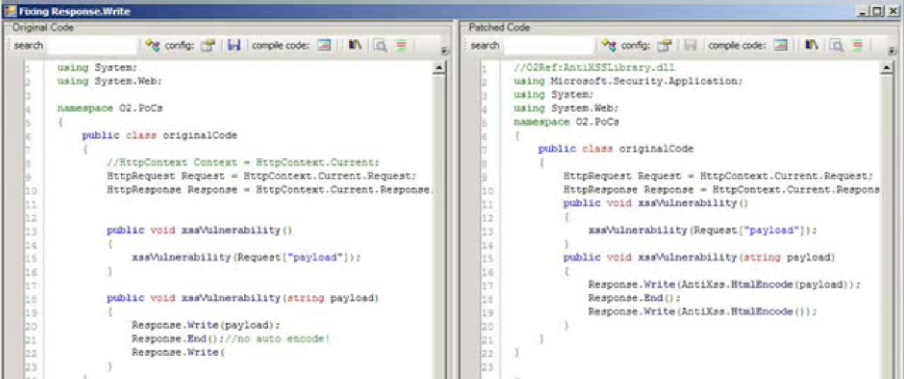 | screenshot 3.technologies/content/AST.md | Two C# files side by side: the original code with Response.Write, and the patched one that encodes the payload. the author's screenshot | redraw | A security fix made by rewriting the tree is still a strong before-and-after; as code on a screenshot it cannot be read in print. Redraw as a two-column comparison if chapter 3 or 25 keeps the story. |
 | illustration 2.mvp-for-gen-z-dev/content/open-source.md | A tree whose leaves are open-source logos: openSUSE, CakePHP, git, Ruby, PHP, Joomla, Drupal, MySQL, MongoDB, WordPress, Linux, Python and others. trademarks of their owners; source of the drawing not recorded | replace ch. 26 | The point (a whole ecosystem grew from open code) carries without logos. For chapter 26 the fork-next-door-triangle and who-pays-for-open-source proposals say what the 2026 chapter argues; drop the tree. |
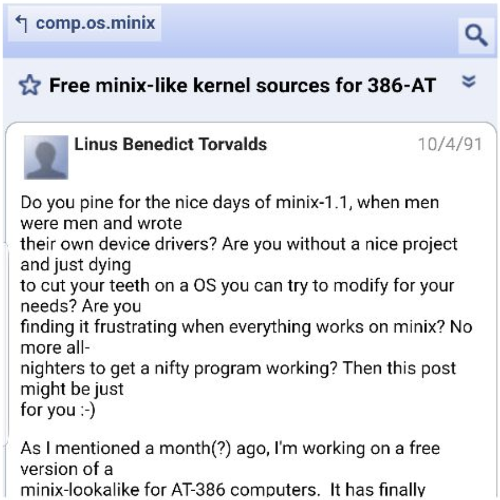 | screenshot 2.mvp-for-gen-z-dev/draft/linux.md | Linus Torvalds's post to comp.os.minix of 25 August 1991 announcing a free kernel for 386 machines, as shown in Google Groups. Linus Torvalds's public post | replace ch. 26 | Named as text in the draft, never placed. The words are the history; set them as a quote in chapter 26 rather than as a screenshot of a Groups page. |
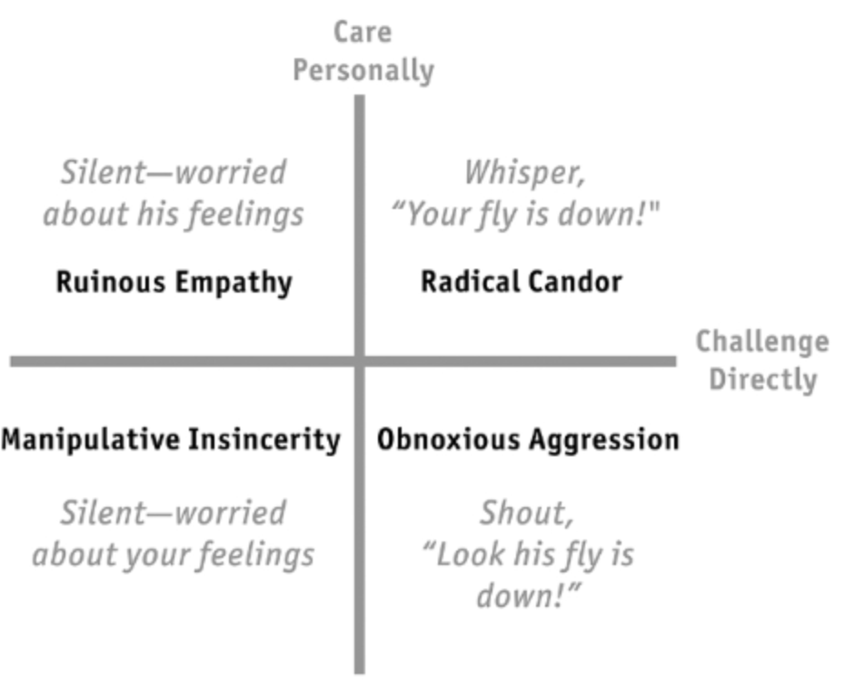 | infographic 4.life-patterns/content/being-criticized-is-a-privilege.md | The Radical Candor two by two: care personally against challenge directly, with ruinous empathy, radical candor, manipulative insincerity and obnoxious aggression. Kim Scott's framework; drawing third party | replace | The only true infographic in the 2018 book, and not the book's. The release candidate does not carry the chapter; if a chapter on feedback returns, draw the quadrant by code with Kim Scott credited, or link hers. |
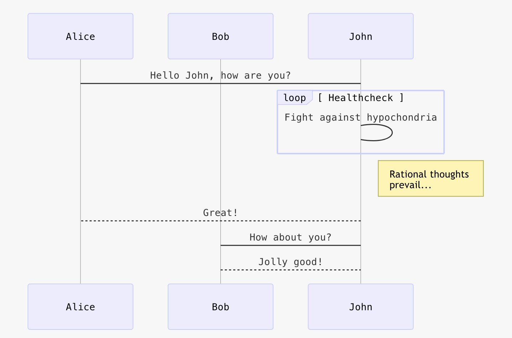 | diagram 2.mvp-for-gen-z-dev/content/dot-language.md | A sequence diagram: Alice, Bob and John, a 'loop Healthcheck' box and a 'Rational thoughts prevail' note. the author's rendering of the PlantUML documentation's example | drop ch. 31 | The PlantUML documentation's example, not the book's; diagrams-as-code is better shown with the book's own process (read-comment-decide-loop is one). |
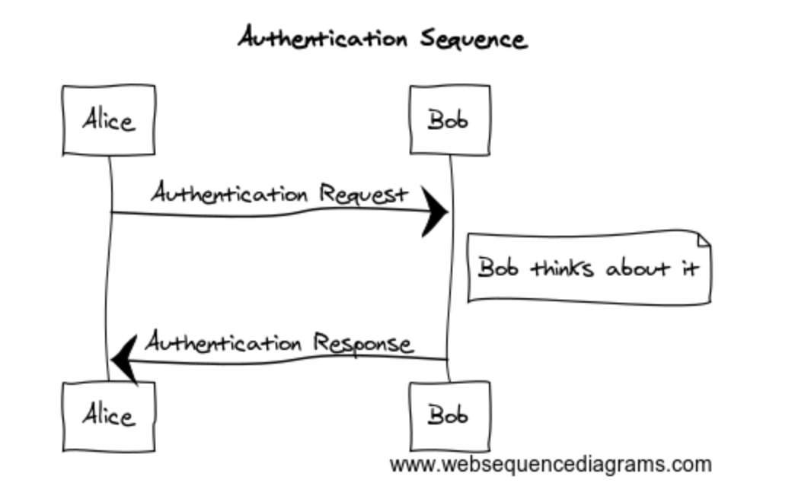 | diagram 2.mvp-for-gen-z-dev/content/dot-language.md | An 'Authentication Sequence' between Alice and Bob in websequencediagrams.com's sketched style, with the site's address on it. websequencediagrams.com's rendering | drop | Third-party rendering with its address on the image. |
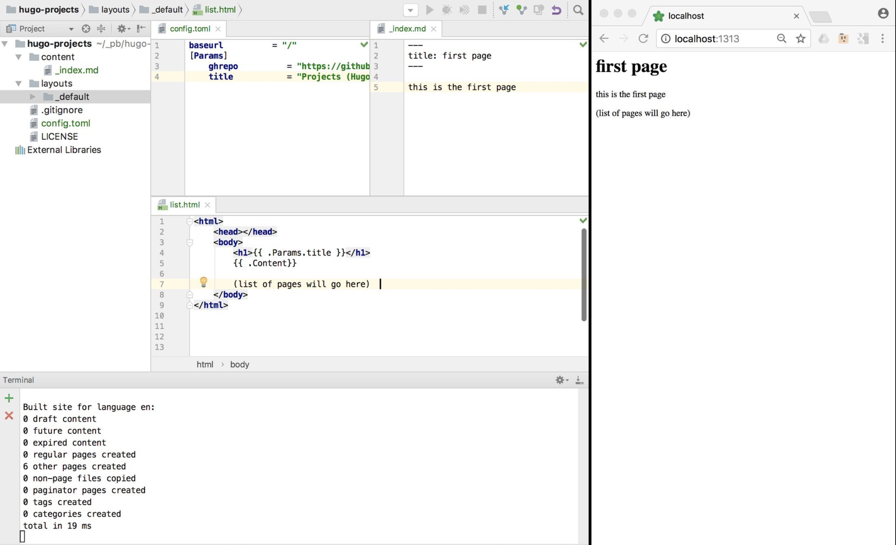 | screenshot 2.mvp-for-gen-z-dev/content/hugo.md | An IDE and a browser side by side: a Hugo site's files, a template, and the page it renders, with the build output. the author's screenshot | drop ch. 36 | Tooling of 2018. Publishing in 2026 is chapter 12 (your own newsroom) and 36 (your own newsroom and inbox), which have their own proposals (newsroom-in-five-steps, voice-memo-to-checked-site). |
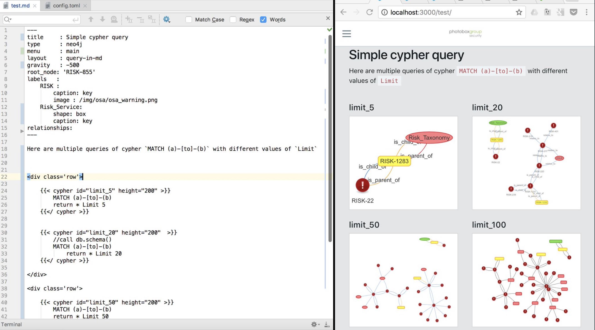 | screenshot 2.mvp-for-gen-z-dev/content/hugo.md | A Hugo page rendering Neo4j Cypher queries as small graphs (limit 5, 20, 50, 100), with the code beside it. the author's screenshot | drop ch. 31 | The idea it showed, a page drawn from a graph, is now this site; graph/view.html draws the book's own graph live. |
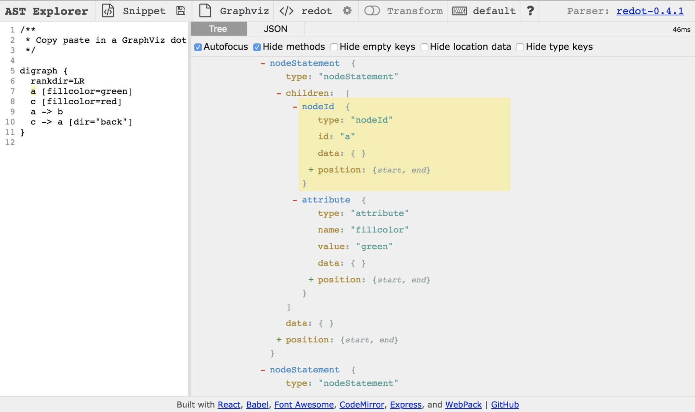 | screenshot 3.technologies/content/AST.md | AST Explorer parsing a small Graphviz file into its tree, as JSON. the author's screenshot of astexplorer.net | drop | Too small to read in print; the redrawn tree replaces it. |
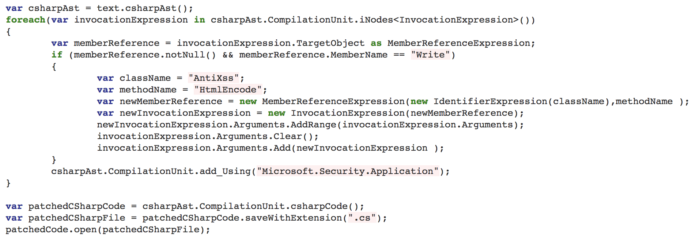 | screenshot 3.technologies/content/AST.md | The C# code that walks the tree and patches it (Roslyn). the author's screenshot | drop | Code is better set as code in the text than as an image. |
 | diagram 3.technologies/draft/dopamine.md | The dopamine molecule, small, linked to Wikimedia Commons. Wikimedia Commons | drop | A draft's illustration; not in the release candidate. |
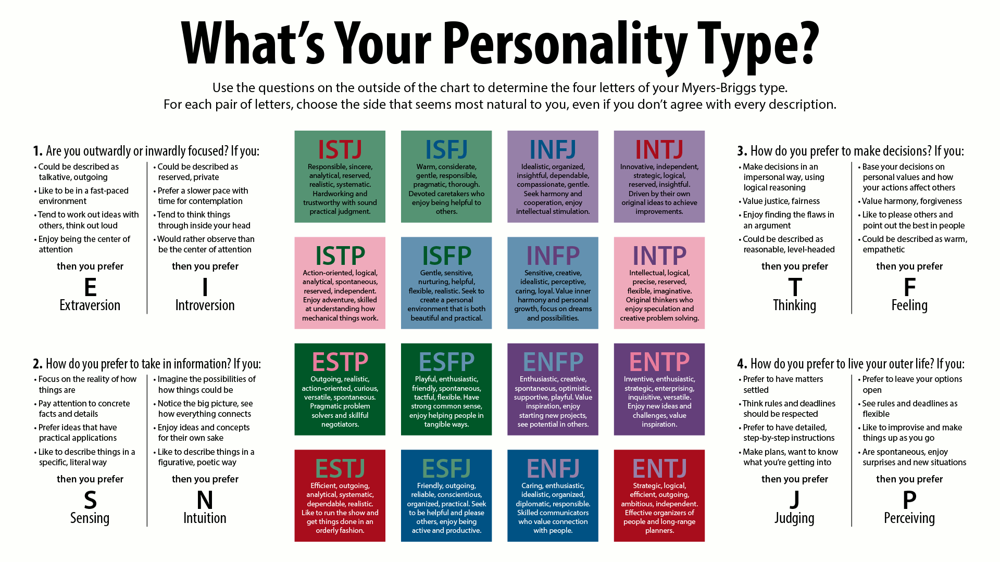 | infographic 4.life-patterns/content/being-criticized-is-a-privilege.md | 'What's Your Personality Type?': the sixteen Myers-Briggs types, coloured, with the four questions. third party | drop | Third party, and the second edition reaches the same point with its own lens (where-do-you-land). |
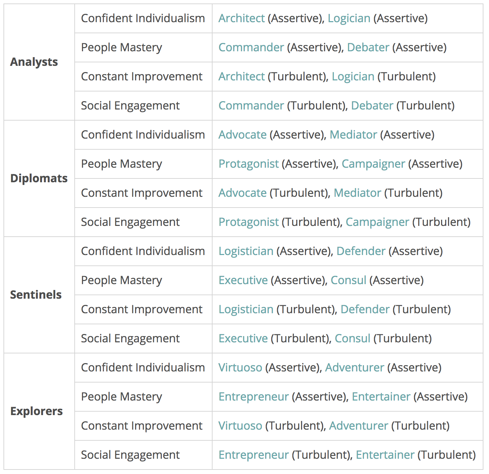 | table 4.life-patterns/content/being-criticized-is-a-privilege.md | 16Personalities' table of roles and strategies (analysts, diplomats, sentinels, explorers). 16Personalities | drop | Third party. |
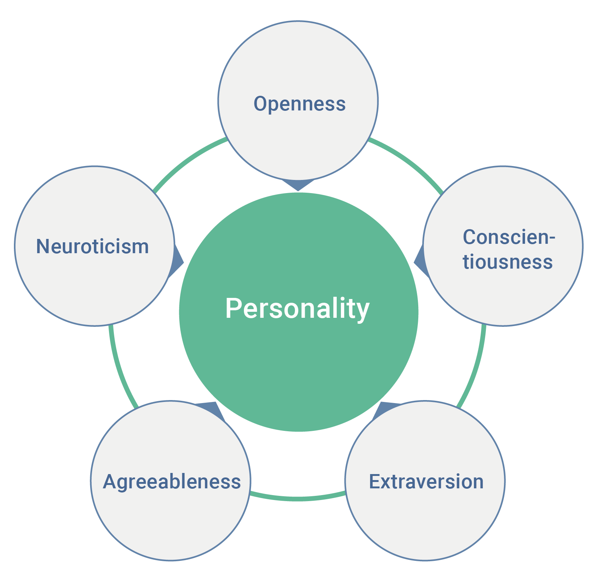 | diagram 4.life-patterns/content/being-criticized-is-a-privilege.md | The Big Five around 'Personality': openness, conscientiousness, extraversion, agreeableness, neuroticism. third party | drop | Third party; not in the release candidate. |
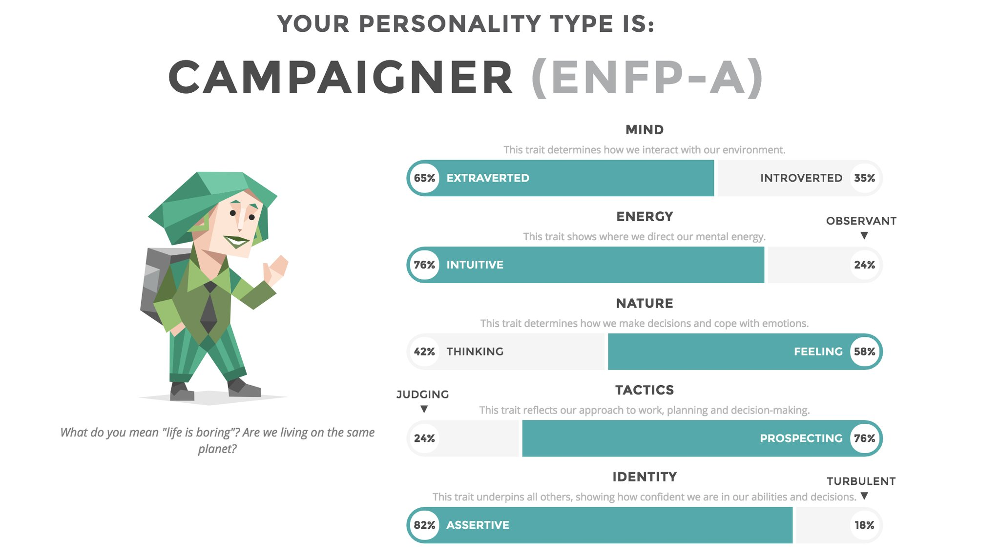 | screenshot 4.life-patterns/content/being-criticized-is-a-privilege.md | The author's own 16Personalities result: Campaigner (ENFP-A), with the five trait bars. 16Personalities' page, the author's result | drop | A personal anecdote in a third party's design; if Dinis wants the anecdote, say it in a sentence. |
 | screenshot 7.your-cv/future-self.md | A line of a markdown file: an Investopedia link and a note to find an article about Amazon as a factory of factories. the author's screenshot | drop ch. 28 | A note to self, not a figure; chapter 28 (graphs, memory and your future self) has memory-is-context-management. |
 | screenshot 7.your-cv/future-self.md | Twitter search results for 'DinisCruz amazon': the author's tweet 'The Amazon machine'. Twitter's page, the author's tweet | drop ch. 28 | The point (your public record is searchable memory for your future self) is chapter 28's; the screenshot of a 2018 Twitter page is not. |
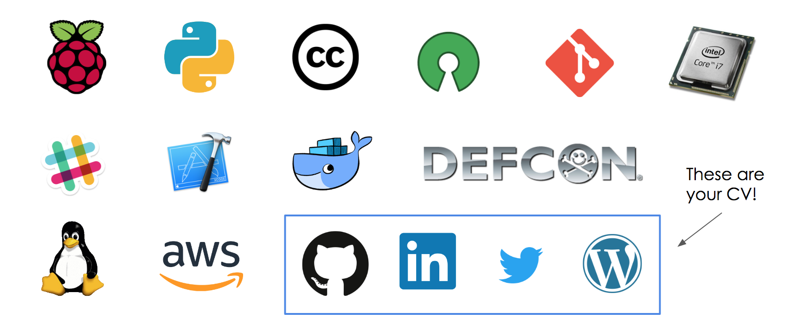 | slide1.introduction/_index.md | The 2017 slide of logos the first edition opened with: Raspberry Pi, Python, Creative Commons, OWASP, git, a CPU, Slack, Xcode, Docker, DEFCON, Linux, AWS, GitHub, LinkedIn, Twitter, WordPress, with 'These are your CV!'. trademarks of their owners; the slide is the author's | history ch. 2 | Chapter 2 of the release candidate tells the story of this slide and the book now opens with wonder, not logos (idea wonder-not-fear). Keep it as the 2018 record and, if Dinis wants it in chapter 2, as a small historical figure with its caption; a logo wall is not something to redraw. |
| logo 2.mvp-for-gen-z-dev/content/creative-commons.md | The Creative Commons logo, in the front matter of two 2018 chapters (Creative Commons and Jira). Creative Commons (trademark) | history | A front-matter logo of the 2018 Hugo theme; not a figure. | |
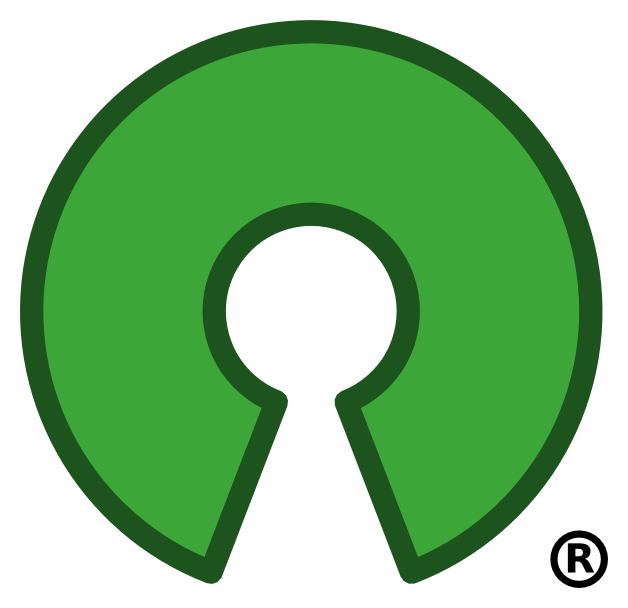 | logo 2.mvp-for-gen-z-dev/content/open-source.md | The Open Source Initiative's keyhole logo, in the chapter's front matter. Open Source Initiative (trademark) | history | A front-matter logo of the 2018 Hugo theme; not a figure. |
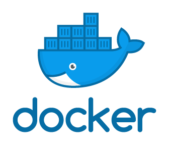 | logo not referenced | The Docker whale logo. No 2018 chapter references it. Docker (trademark) | history | Unreferenced; kept because v1/ is frozen. |
 | cover not referenced | The cover of the September 2018 early release: navy, GEN Z in four colour blocks, eight lines from Question everything to Shake things up. the author's | history | The cover waits (decision 004). Its four colours are this plan's palette. |
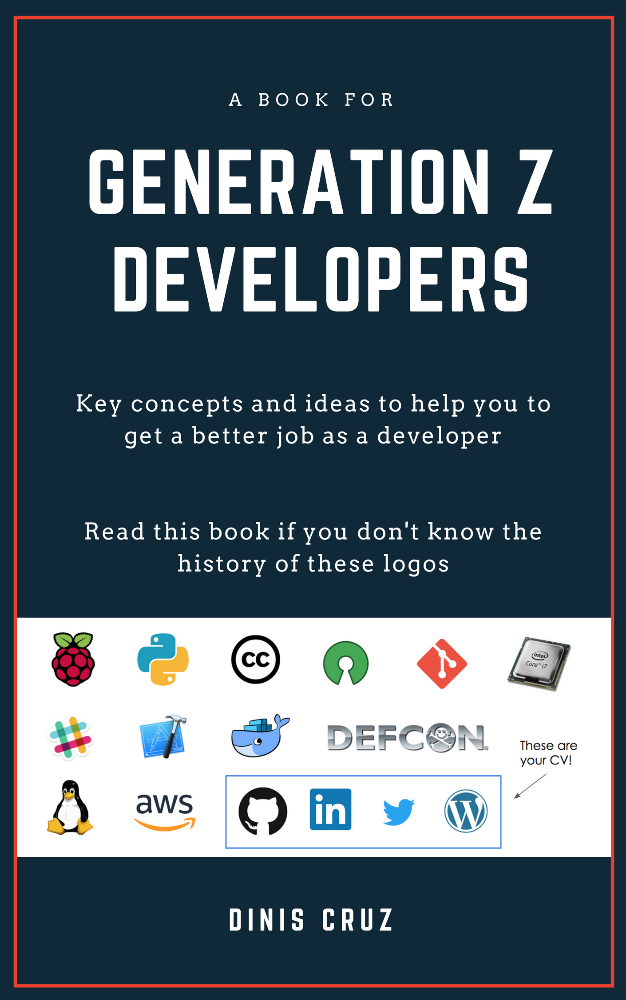 | cover not referenced | An earlier cover design. the author's | history | Kept as the record. |
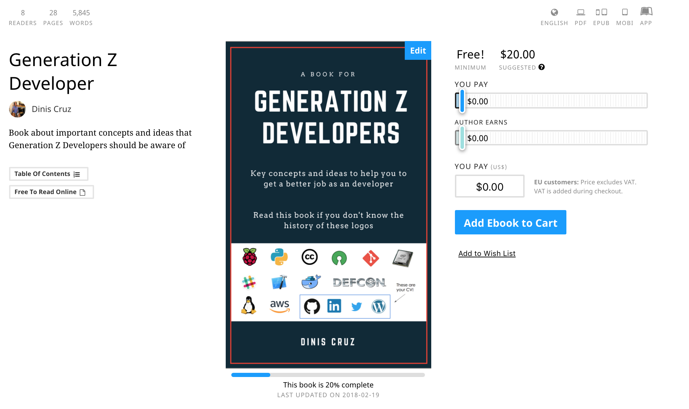 | screenshot not referenced | The book's Leanpub page in February 2018, 20% complete, the early cover with logos, free with a suggested $20. Leanpub's page, the author's book | history ch. 41 | Unreferenced in the text; the record of releasing early. Chapter 41 (how this book was made) could use it beside today's site. |
The newsroom: 156 figures in 46 articles
The six articles tagged gen-z-book have only eight figures between them; the rest are in the articles the startup edition draws on. Almost all are drawn by code (Mermaid, SVG, a renderer with fixed layouts, as the newsroom's The infographic bake-off says), off-white, teal for the new way, grey for the old, red for risk. A figure marked behind a proposal is in an article a proposal draws on: reuse it, redraw it in the book's palette, or leave it to the article. The images stay on the newsroom and load from there.

A website to finish the book 1 figure · tagged gen-z-book
The article on newsroom.sgit.ai →

Act as the job you want 1 figure · tagged gen-z-book
The article on newsroom.sgit.ai →

Generation Z Developers (AI edition) 2 figures · tagged gen-z-book
The article on newsroom.sgit.ai →


Hired for the workflow 2 figures · tagged gen-z-book
The article on newsroom.sgit.ai →


Short, punchy, and co-written with Claude 1 figure · tagged gen-z-book
The article on newsroom.sgit.ai →

A policy beside the prompt 4 figures
The article on newsroom.sgit.ai →


Agentics, ready to sell 3 figures
The article on newsroom.sgit.ai →


A locked-down desktop for an agent, by the minute, is still hard to rent 3 figures
The article on newsroom.sgit.ai →


A chat box on a site with no server, the plan, and the trade it makes 1 figure
The article on newsroom.sgit.ai →

Cloudflare as Lego blocks 2 figures
The article on newsroom.sgit.ai →


Ephemeral town planner services 1 figure
The article on newsroom.sgit.ai →

Every mistake added a rule 14 figures
The article on newsroom.sgit.ai →


Explorer coding 2 figures
The article on newsroom.sgit.ai →


From sending a file to sgit 3 figures
The article on newsroom.sgit.ai →


How to run synthetic users on your own site 9 figures
The article on newsroom.sgit.ai →


I miss it, so it is working 2 figures
The article on newsroom.sgit.ai →


If somebody built a company on code review 7 figures
The article on newsroom.sgit.ai →


Judo for small countries 2 figures
The article on newsroom.sgit.ai →


Move the cloud, not the code 2 figures
The article on newsroom.sgit.ai →


No server, by design 4 figures
The article on newsroom.sgit.ai →


Open source is not free 8 figures
The article on newsroom.sgit.ai →


Paying after the value 2 figures
The article on newsroom.sgit.ai →


Ten hard questions for RiskMandate, answered 1 figure
The article on newsroom.sgit.ai →

The SaaS apocalypse will be decided by inertia, not by AI 2 figures
The article on newsroom.sgit.ai →


Sell, don't issue 2 figures
The article on newsroom.sgit.ai →


Send an agent, not a spreadsheet 5 figures
The article on newsroom.sgit.ai →


Zoom into an agent's behaviour policy and you find the business logic 13 figures
The article on newsroom.sgit.ai →


The citizen developer is good news 1 figure
The article on newsroom.sgit.ai →

The controllable founder 3 figures
The article on newsroom.sgit.ai →


The expert founders 3 figures
The article on newsroom.sgit.ai →


The fork next door 3 figures
The article on newsroom.sgit.ai →


The key is the billing system 3 figures
The article on newsroom.sgit.ai →


For a startup, the most important question is whether they miss it 2 figures
The article on newsroom.sgit.ai →


What can your agent reach? RiskMandate and the Agent Behaviour Policy, explained for the person who has to decide 2 figures
The article on newsroom.sgit.ai →


Git for things you cannot put on GitHub 6 figures
The article on newsroom.sgit.ai →


Where the vault keys live 6 figures
The article on newsroom.sgit.ai →


Who are you protecting against? Draw the security line where the attacker is, not above it 5 figures
The article on newsroom.sgit.ai →


Who will fix your mess? An answer to HBR's "deployment gap" from what this site has already published 10 figures
The article on newsroom.sgit.ai →


Your own newsroom 2 figures
The article on newsroom.sgit.ai →


The storyboards
Panels drawn by assets/storyboard.js from data, some of which are already infographics: evidence cards (a pinned quote or a bar chart), spectrums and graphs. A proposal that is a sequence of scenes with people is a storyboard, not an infographic, and is left to them.
- The 2018 book, as a storyboard: 4 panels that already work as an infographic (panels 3, 5, 6, 9)
- A first storyline for the second edition: 5 panels that already work as an infographic (panels 3, 5, 7, 12, 13)
- The opening: you are lucky to be here: 4 panels that already work as an infographic (panels 6, 8, 10, 16)
- Where do you land?: 2 panels that already work as an infographic (panels 5, 7)
- Connect the dots backwards: 2 panels that already work as an infographic (panels 3, 7)
- Where the thinking came from: 4 panels that already work as an infographic (panels 4, 5, 7, 8)
- Generative AI, not AI: 4 panels that already work as an infographic (panels 2, 7, 10, 12)
- Follow the rabbit holes: 4 panels that already work as an infographic (panels 5, 7, 9, 10)
- Everything is connected: 6 panels that already work as an infographic (panels 3, 4, 7, 8, 9, 10)
- Lenses, roles and loops: 9 panels that already work as an infographic (panels 2, 4, 6, 7, 8, 10, 11, 12, 13)
- The book in release mode: 7 panels that already work as an infographic (panels 2, 4, 6, 7, 8, 11, 12)
- Gen ZX Developers: 7 panels that already work as an infographic (panels 3, 6, 7, 9, 10, 11, 12)
Data: admin/content/infographics/v1-figures.json and newsroom.json, catalogued on 2026-10-19 from the newsroom's graphs.json.